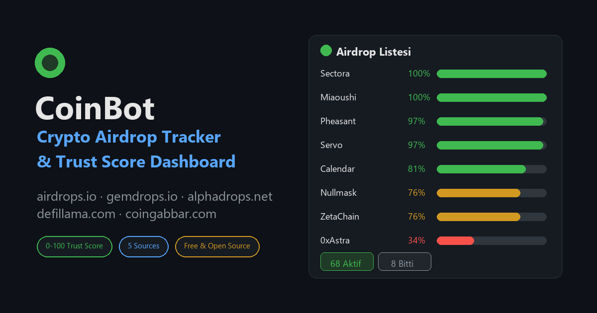

🔎 Otomatik Tarama
airdrops.io, gemdrops.io, alphadrops.net, defillama.com ve coingabbar.com'yu 30 dakikada bir tarar; her coinin detay sayfasına girer.
📊 Güven Puanı (%0-100)
Kontrat paylaşımı, borsa bağlantısı, audit, sosyal aktivite, ücret talebi gibi faktörlerle faktör bazlı puan ve kategori.
🪂 Drop Detayları
Reward miktarı, hangi borsa (Binance, Bybit, KuCoin...), katılım adımları, 0x kontrat adresi, KYC/ücret uyarıları.
🖥️ Canlı Dashboard
Aktif/Bitmiş durumu, kaynak ve kategori filtreleri, puan sıralaması, JSON API — hepsi localhost'ta.
Hızlı Başlangıç
git clone https://github.com/RetroNyym/coin-airdrop-tracker.git cd coin-airdrop-tracker pip install -r requirements.txt python dashboard.py
Pano otomatik açılır: http://127.0.0.1:8787
Neden CoinBot?
Çoğu "airdrop listesi" sitesi reklam doludur ve riskli projeleri seçemezsiniz.
CoinBot listeleri otomatik toplar, her drop'u yapılandırılmış veriye çevirir ve
şeffaf bir faktör bazlı güven puanı ile sıralar — böylece hangi airdropan
değerli, hangisi riskli sorusuna tek ekranda cevap alırsınız. Puanlama mantığı
tamamen açık kaynak ve config.py üzerinden özelleştirilebilir.
Uyarı: Puanlar otomatik tahmindir, yatırım tavsiyesi değildir. Kendi araştırmanızı yapın (DYOR).